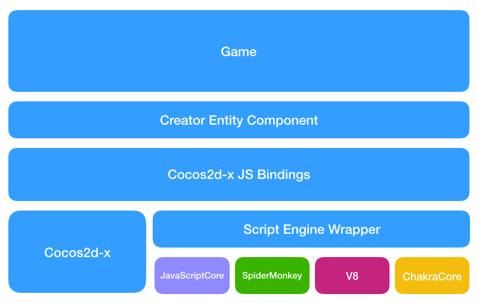
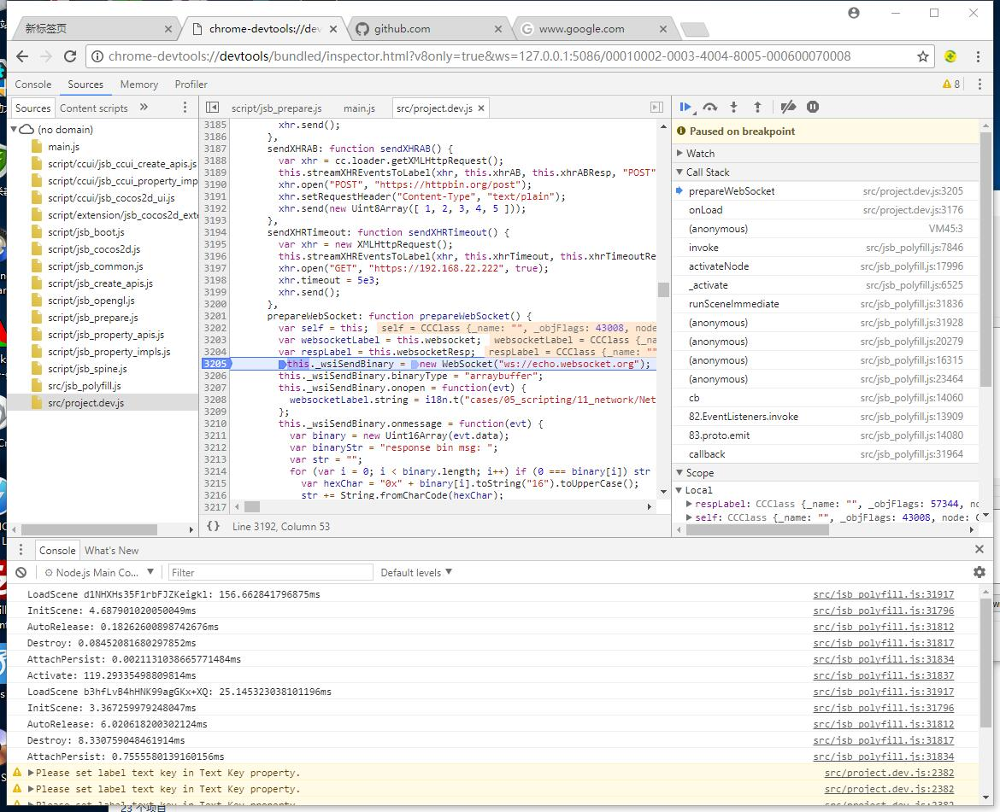
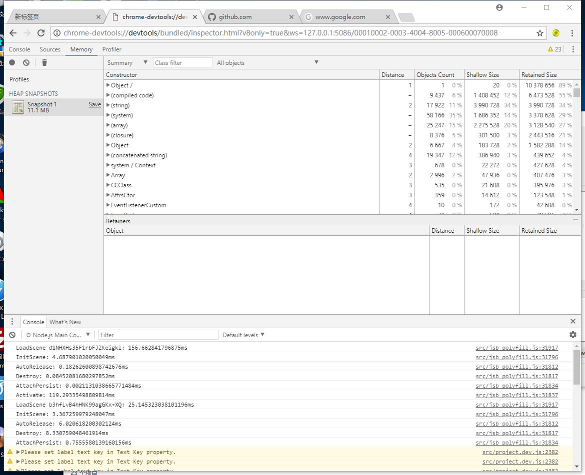
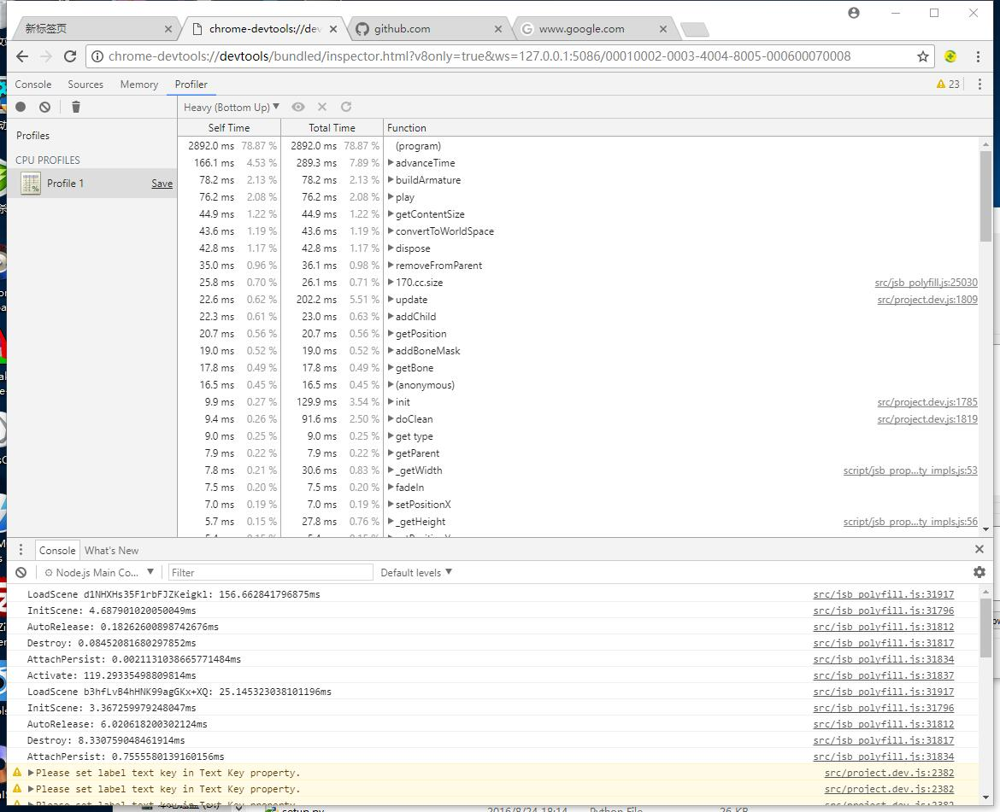

The Tutorial for JSB 2.0
This document is based on v2.x. It may change slightly on Cocos Creator 3.0 and will be updated as soon as possible.
The Abstraction Layer of Script Engine
Architecture

Macro
The abstraction layer is bound to take more CPU execution time than using the JS engine API directly. How to minimize the overhead of the abstraction layer becomes the first goal of the design.
Most of work in JS binding is actually setting JS related operations with CPP callbacks and associating CPP object within the callback function. In fact, it mainly contains the following two situation:
Register JS functions (including global functions, class constructors, class destructors, class member functions, and class static member functions), binding revevant CPP callbacks
Register accessors for JS properties, bind CPP callbacks for reading and writing properties respectively
How to achieve the minimum overhead for the abstract layer and expose the unified API?
For example, to register a JS function in CPP, there are different definitions in JavaScriptCore, SpiderMonkey, V8, ChakraCore as follows:
JavaScriptCore
JSValueRef JSB_foo_func( JSContextRef _cx, JSObjectRef _function, JSObjectRef _thisObject, size_t argc, const JSValueRef _argv[], JSValueRef* _exception );SpiderMonkey
bool JSB_foo_func( JSContext* _cx, unsigned argc, JS::Value* _vp );V8
void JSB_foo_func( const v8::FunctionCallbackInfo<v8::Value>& v8args );ChakraCore
JsValueRef JSB_foo_func( JsValueRef _callee, bool _isConstructCall, JsValueRef* _argv, unsigned short argc, void* _callbackState );
We evaluated several options and eventually decided to use macros to reduce the differences between the definition and parameter types of different JS engine callbacks, regardless of which engine is used, and developers could use an unified callback definition. We refer to the definition of Lua callback function. The definition of all JS to CPP callback functions in the abstract layer is defined as:
bool foo(se::State& s)
{
...
...
}
SE_BIND_FUNC(foo) // Binding a JS function as an example
After a developer has bound a JS function, remember to wrap the callback function with the macros which start with SE_BIND_. Currently, we provide the following macros:
- SE_BIND_PROP_GET: Wrap a JS object property read callback function
- SE_BIND_PROP_SET: Wrap a JS object property written callback function
- SE_BIND_FUNC: Wrap a JS function that can be used for global functions, class member functions or class static functions
- SE_DECLARE_FUNC: Declare a JS function, generally used in the header file
- SE_BIND_CTOR: Wrap a JS constructor
- SE_BIND_SUB_CLS_CTOR: Wrap the constructor of a JS subclass by using
cc.Class.extend. - SE_FINALIZE_FUNC: Wrap the finalize function of a JS object, finalize function is invoked when the object is released by Garbage Collector
- SE_DECLARE_FINALIZE_FUNC: Declares the finalize function of a JS object
- _SE: The macro for making callback be recognized by different JS engine. Note that the first character is underscored, similar to
_T ('xxx')in Windows for wrapping Unicode or MultiBytes string
API
CPP Namespace
All types of the abstraction layer are under the se namespace, which is an abbreviation of ScriptEngine.
Types
se::ScriptEngine
se::ScriptEngine is the JS engine administrator, responsible for JS engine initialization, destruction, restart, native module registration, loading scripts, doing garbage collection, JS exception cleanup and whether to enable the debugger. It is a singleton that could be accessed via se::ScriptEngine::getInstance().
se::Value
se::Value can be understood as a JS variable reference in the CPP layer. There are six types of JS variables: object, number, string, boolean, null, undefined, so se::Value uses an union to include object, number, string, boolean these 4 kinds of value types, non-value types like null and undefined can be represented by _type directly.
namespace se {
class Value {
enum class Type : char
{
Undefined = 0,
Null,
Number,
Boolean,
String,
Object
};
...
...
private:
union {
bool _boolean;
double _number;
std::string* _string;
Object* _object;
} _u;
Type _type;
...
...
};
}
If a se::Value stores the underlying data types, such as number, string, boolean, which is directly stored by value copy. The storage of object is special because it is a weak reference to JS objects via se::Object*.
se::Object
se::Object extends from se::RefCounter which is a class for reference count management. Currently, only se::Object inherits from se::RefCounter in the abstraction layer.
As we mentioned in the last section, se::Object is a weak reference to the JS object, therefore I will explain why it's a weak reference.
Reason 1: The requirement of controlling the life cycle of CPP objects by JS objects
After creating a Sprite in the script layer via var sp = new cc.Sprite("a.png");, we create a se::Object in the constructor callback and leave it in a global map (NativePtrToObjectMap), this map is used to query the cocos2d::Sprite* to get the corresponding JS object se::Object*.
static bool js_cocos2d_Sprite_finalize(se::State& s)
{
CCLOG("jsbindings: finalizing JS object %p (cocos2d::Sprite)", s.nativeThisObject());
cocos2d::Sprite* cobj = (cocos2d::Sprite*)s.nativeThisObject();
if (cobj->getReferenceCount() == 1)
cobj->autorelease();
else
cobj->release();
return true;
}
SE_BIND_FINALIZE_FUNC(js_cocos2d_Sprite_finalize)
static bool js_cocos2dx_Sprite_constructor(se::State& s)
{
cocos2d::Sprite* cobj = new (std::nothrow) cocos2d::Sprite(); // cobj will be released in the finalize callback
s.thisObject()->setPrivateData(cobj); // setPrivateData will make a mapping between se::Object* and cobj
return true;
}
SE_BIND_CTOR(js_cocos2dx_Sprite_constructor, __jsb_cocos2d_Sprite_class, js_cocos2d_Sprite_finalize)
Imagine if you force se::Object to be a strong reference to a JS object that leaves JS objects out of GC control and the finalize callback will never be fired because se::Object is always present in map which will cause memory leak.
It is precisely because the se::Object holds a weak reference to a JS object so that controlling the life of the CPP object by JS object can be achieved. In the above code, when the JS object is released, it will trigger the finalize callback, developers only need to release the corresponding CPP object in js_cocos2d_Sprite_finalize, the release of se::Object has been included in the SE_BIND_FINALIZE_FUNC macro by automatic processing, developers do not have to manage the release of se::Object in JS Object Control CPP Object mode, but in CPP Object Control JS Object mode, developers have the responsibility to manage the release of se::Object. I will give an example in the next section.
Reason 2: More flexible, supporting strong reference by calling the se::Object::root method manually
se::Object provides root/unroot method for developers to invoke, root will put JS object into the area not be scanned by the GC. After calling root, se::Object* is a strong reference to the JS object. JS object will be put back to the area scanned by the GC only when se::Object is destructed or unroot is called to make root count to zero.
Under normal circumstances, if CPP object is not a subclass of cocos2d :: Ref, CPP object will be used to control the life cycle of the JS object in binding. Binding the engine modules, like spine, dragonbones, box2d and other third-party libraries uses this method. When the CPP object is released, you need to find the corresponding se::Object in the NativePtrToObjectMap, then manually unroot and decRef it. Take the binding of spTrackEntry in spine as an example:
spTrackEntry_setDisposeCallback([](spTrackEntry* entry){
se::Object* seObj = nullptr;
auto iter = se::NativePtrToObjectMap::find(entry);
if (iter != se::NativePtrToObjectMap::end())
{
// Save se::Object pointer for being used in cleanup method.
seObj = iter->second;
// Unmap native and js object since native object was destroyed.
// Otherwise, it may trigger 'assertion' in se::Object::setPrivateData later
// since native obj is already released and the new native object may be assigned with
// the same address.
se::NativePtrToObjectMap::erase(iter);
}
else
{
return;
}
auto cleanup = [seObj](){
auto se = se::ScriptEngine::getInstance();
if (!se->isValid() || se->isInCleanup())
return;
se::AutoHandleScope hs;
se->clearException();
// The mapping of native object & se::Object was cleared in above code.
// The private data (native object) may be a different object associated with other se::Object.
// Therefore, don't clear the mapping again.
seObj->clearPrivateData(false);
seObj->unroot();
seObj->decRef();
};
if (!se::ScriptEngine::getInstance()->isGarbageCollecting())
{
cleanup();
}
else
{
CleanupTask::pushTaskToAutoReleasePool(cleanup);
}
});
se::Object Types
Native Binding Object
The creation of native binding object has been hidden in the
SE_BIND_CTORandSE_BIND_SUB_CLS_CTORmacros, if developers need to use these::Objectin the binding callback, just get it by invokings.thisObject(). Wheresisse::State&which will be described in the following chapters.
In addition, se::Object currently supports the manual creation of the following objects:
- Plain Object: Created by
se::Object::createPlainObject, similar tovar a = {};in JS - Array Object: Created by
se::Object::createArrayObject, similar tovar a = [];in JS - Uint8 Typed Array Object: Created by
se::Object::createTypedArray, likevar a = new Uint8Array(buffer);in JS - Array Buffer Object: Created by
se::Object::createArrayBufferObjectsimilar tovar a = new ArrayBuffer(len);in JS
The Release of The Objects Created Manually
se::Object::createXXX is unlike the create method in cocos2d-x, the abstraction layer is a completely separate module which does not rely on the autorelease mechanism in cocos2d-x. Although se::Object also inherits the reference count class se::RefCounter, developers need to handle the release for objects created manually.
se::Object* obj = se::Object::createPlainObject();
...
...
obj->decRef(); // Decrease the reference count to avoid memory leak
se::HandleObject
se::HandleObject is the recommended helper class for managing the objects created manually.
- If using manual creation of objects in complex logic, developers often forget to deal with
decRefin different conditions
bool foo()
{
se::Object* obj = se::Object::createPlainObject();
if (var1)
return false; // Return directly, forget to do 'decRef' operation
if (var2)
return false; // Return directly, forget to do 'decRef' operation
...
...
obj->decRef();
return true;
}
Plus adding decRef to different return condition branches can result in logically complex and difficult to maintain, and it is easy to forget about decRef if you make another return branch later.
- If the JS engine did a GC operationJS engine right after
se::Object::createXXX, which will result in these::Objectreference to an illegal pointer, the program may crash.
In order to solve the above problems, the abstraction layer defines a type that assists in the management of manually created objects, namely se::HandleObject.
se::HandleObject is a helper class for easier management of the release (decRef), root, and unroot operations of manually created se::Object objects.
The following two code snippets are equivalent, the use of se::HandleObject significantly smaller amount of code, and more secure.
{
se::HandleObject obj(se::Object::createPlainObject());
obj->setProperty(...);
otherObject->setProperty("foo", se::Value(obj));
}
Is equal to:
{
se::Object* obj = se::Object::createPlainObject();
obj->root(); // Root the object immediatelly to prevent the object being garabge collected.
obj->setProperty(...);
otherObject->setProperty("foo", se::Value(obj));
obj->unroot(); // Call unroot while the object is needed anymore.
obj->decRef(); // Decrease the reference count to avoid memory leak.
}
NOTES:
Do not try to use
se::HandleObjectto create a native binding object. In theJS controls of CPPmode, the release of the bound object will be automatically handled by the abstraction layer. In theCPP controls JSmode, the previous chapter has already described.The
se::HandleObjectobject can only be allocated on the stack, and ase::Objectpointer must be passed in.
se::Class
se::Class is used to expose CPP classes to JS, it creates a constructor function in JS that has a corresponding name.
It has the following methods:
static se::Class* create(className, obj, parentProto, ctor)Creating a Class. If the registration is successful, we could create an object by
var xxx = new SomeClass ();in the JS layer.bool defineFunction(name, func): Define a member function for a class.bool defineProperty(name, getter, setter): Define a property accessor for a class.bool defineStaticFunction(name, func): Define a static function for a class, the JS function could be accessed bySomeClass.foo()rather than the method ofvar obj = new SomeClass(); obj.foo(), means it's a class method instead of an instance method.bool defineStaticProperty(name, getter, setter): Define a static property accessor which could be invoked bySomeClass.propertyA, it's nothing about instance object.bool defineFinalizeFunction(func): Define the finalize callback function after JS object is garbage collected.bool install(): Install a class JS engine.Object* getProto(): Get the prototype of JS constructor installed, similar toFoo.prototypeoffunction Foo(){}in JS.const char* getName() const: Get the class name which is also the name of JS constructor.
NOTE: you do not need to release memory manually after
se::Classtype is created, it will be automatically encapsulated layer.
You could look through the API documentation or code comments for more specific API instructions.
se::AutoHandleScope
The se::AutoHandleScope object type is purely a concept introduced to address V8 compatibility issues. In V8, any action that calls v8::Local<> on a CPP function that needs to trigger a JS related operation, such as calling a JS function, accessing a JS property, etc, requires a v8::HandleScope function be invoked before calling these operations, otherwise it will cause the program to crash.
So the concept of se::AutoHandleScope was introduced into the abstraction layer, which is implemented only on V8, and the other JS engines are currently just empty implementations.
Developers need to remember that in any code execution from CPP, you need to declare a se::AutoHandleScope before calling JS's logic. For example:
class SomeClass {
void update(float dt) {
se::ScriptEngine::getInstance()->clearException(); // Clear JS exceptions
se::AutoHandleScope hs; // Declare a handle scope, it's needed for V8
se::Object* obj = ...;
obj->setProperty(...);
...
...
obj->call(...);
}
};
se::State
In the previous section, we have mentioned the se::State type, which is an environment in the binding callback. We can get the current CPP pointer, se::Object object pointer, parameter list and return value reference through se::State argument.
bool foo(se::State& s)
{
// Get native object pointer bound with the current JS object.
SomeClass* cobj = (SomeClass*)s.nativeThisObject();
// Get se::Object pointer that represents the current JS object.
se::Object* thisObject = s.thisObject();
// Get argument list of the current function.
const se::ValueArray& args = s.args();
// Set return value for current function.
s.rval().setInt32(100);
// Return true to indicate the function is executed successfully.
return true;
}
SE_BIND_FUNC(foo)
Does The Abstraction Layer Depend on Cocos2D-X?
No.
This abstraction layer was originally designed as a stand-alone module which is completely independent of Cocos2D-X engine. Developers can copy the abstraction layer code in cocos/scripting/js-bindings/jswrapper directory and paste them to other projects directly.
Manual Binding
Define A Callback Function
static bool Foo_balabala(se::State& s)
{
const auto& args = s.args();
int argc = (int)args.size();
if (argc >= 2) // Limit the number of parameters must be greater than or equal to 2, or throw an error to the JS layer and return false. {
...
...
return true;
}
SE_REPORT_ERROR("wrong number of arguments: %d, was expecting %d", argc, 2) ;
return false;
}
// If binding a function, we use SE_BIND_FUNC macro. For binding a constructor, destructor, subclass constructor, please use SE_BIND_balabala macros memtioned above.
SE_BIND_FUNC(Foo_balabala)
Set A Property Value for JS object
se::Object* globalObj = se::ScriptEngine::getInstance()->getGlobalObject(); // We get the global object just for easiler demenstration.
globalObj->setProperty("foo", se::Value(100)); // Set a property called `foo` with a value of 100 to the global object.
Then, you can use the foo global variable in JS directly.
cc.log("foo value: " + foo); // Print `foo value: 100`.
Set A Property Accessor for JS Object
// The read callback of "foo" property of the global object
static bool Global_get_foo(se::State& s)
{
NativeObj* cobj = (NativeObj*)s.nativeThisObject();
int32_t ret = cobj->getValue();
s.rval().setInt32(ret);
return true;
}
SE_BIND_PROP_GET(Global_get_foo)
// The write callback of "foo" property of the global object
static bool Global_set_foo(se::State& s)
{
const auto& args = s.args();
int argc = (int)args.size();
if (argc >= 1)
{
NativeObj* cobj = (NativeObj*)s.nativeThisObject();
int32_t arg1 = args[0].toInt32();
cobj->setValue(arg1);
// Do not need to call "s.rval().set(se::Value::Undefined)" for functions without return value.
return true;
}
SE_REPORT_ERROR("wrong number of arguments: %d, was expecting %d", argc, 1) ;
return false;
}
SE_BIND_PROP_SET(Global_set_foo)
void some_func()
{
se::Object* globalObj = se::ScriptEngine::getInstance()->getGlobalObject(); // We get the global object just for easiler demenstration.
globalObj->defineProperty("foo", _SE(Global_get_foo), _SE(Global_set_foo)); // Use _SE macro to package specific function name.
}
Define A Function for JS Object
static bool Foo_function(se::State& s)
{
...
...
}
SE_BIND_FUNC(Foo_function)
void some_func()
{
se::Object* globalObj = se::ScriptEngine::getInstance()->getGlobalObject(); // We get the global object just for easiler demenstration.
globalObj->defineFunction("foo", _SE(Foo_function)); // Use _SE macro to package specific function name.
}
Register A CPP Class to JS Virtual Machine
static se::Object* __jsb_ns_SomeClass_proto = nullptr;
static se::Class* __jsb_ns_SomeClass_class = nullptr;
namespace ns {
class SomeClass
{
public:
SomeClass()
: xxx(0)
{}
void foo() {
printf("SomeClass::foo\n");
Director::getInstance()->getScheduler()->schedule([this](float dt){
static int counter = 0;
++counter;
if (_cb != nullptr)
_cb(counter);
}, this, 1.0f, CC_REPEAT_FOREVER, 0.0f, false, "iamkey");
}
static void static_func() {
printf("SomeClass::static_func\n");
}
void setCallback(const std::function<void(int)>& cb) {
_cb = cb;
if (_cb != nullptr)
{
printf("setCallback(cb)\n");
}
else
{
printf("setCallback(nullptr)\n");
}
}
int xxx;
private:
std::function<void(int)> _cb;
};
} // namespace ns {
static bool js_SomeClass_finalize(se::State& s)
{
ns::SomeClass* cobj = (ns::SomeClass*)s.nativeThisObject();
delete cobj;
return true;
}
SE_BIND_FINALIZE_FUNC(js_SomeClass_finalize)
static bool js_SomeClass_constructor(se::State& s)
{
ns::SomeClass* cobj = new ns::SomeClass();
s.thisObject()->setPrivateData(cobj);
return true;
}
SE_BIND_CTOR(js_SomeClass_constructor, __jsb_ns_SomeClass_class, js_SomeClass_finalize)
static bool js_SomeClass_foo(se::State& s)
{
ns::SomeClass* cobj = (ns::SomeClass*)s.nativeThisObject();
cobj->foo();
return true;
}
SE_BIND_FUNC(js_SomeClass_foo)
static bool js_SomeClass_get_xxx(se::State& s)
{
ns::SomeClass* cobj = (ns::SomeClass*)s.nativeThisObject();
s.rval().setInt32(cobj->xxx);
return true;
}
SE_BIND_PROP_GET(js_SomeClass_get_xxx)
static bool js_SomeClass_set_xxx(se::State& s)
{
const auto& args = s.args();
int argc = (int)args.size();
if (argc > 0)
{
ns::SomeClass* cobj = (ns::SomeClass*)s.nativeThisObject();
cobj->xxx = args[0].toInt32();
return true;
}
SE_REPORT_ERROR("wrong number of arguments: %d, was expecting %d", argc, 1);
return false;
}
SE_BIND_PROP_SET(js_SomeClass_set_xxx)
static bool js_SomeClass_static_func(se::State& s)
{
ns::SomeClass::static_func();
return true;
}
SE_BIND_FUNC(js_SomeClass_static_func)
bool js_register_ns_SomeClass(se::Object* global)
{
// Make sure the namespace exists
se::Value nsVal;
if (!global->getProperty("ns", &nsVal))
{
// If it doesn't exist, create one. Similar as `var ns = {};` in JS.
se::HandleObject jsobj(se::Object::createPlainObject());
nsVal.setObject(jsobj);
// Set the object to the global object with the property name `ns`.
global->setProperty("ns", nsVal);
}
se::Object* ns = nsVal.toObject();
// Create a se::Class object, developers do not need to consider the release of the se::Class object, which is automatically handled by the ScriptEngine.
auto cls = se::Class::create("SomeClass", ns, nullptr, _SE(js_SomeClass_constructor)); // If the registered class doesn't need a constructor, the last argument can be passed in with nullptr, it will make `new SomeClass();` illegal.
// Define member functions, member properties.
cls->defineFunction("foo", _SE(js_SomeClass_foo));
cls->defineProperty("xxx", _SE(js_SomeClass_get_xxx), _SE(js_SomeClass_set_xxx));
// Define finalize callback function
cls->defineFinalizeFunction(_SE(js_SomeClass_finalize));
// Install the class to JS virtual machine
cls->install();
// JSBClassType::registerClass is a helper function in the Cocos2D-X native binding code, which is not a part of the ScriptEngine.
JSBClassType::registerClass<ns::SomeClass>(cls);
// Save the result to global variable for easily use in other places, for example class inheritence.
__jsb_ns_SomeClass_proto = cls->getProto();
__jsb_ns_SomeClass_class = cls;
// Set a property "yyy" with the string value "helloyyy" for each object instantiated by this class.
__jsb_ns_SomeClass_proto->setProperty("yyy", se::Value("helloyyy"));
// Register static member variables and static member functions
se::Value ctorVal;
if (ns->getProperty("SomeClass", &ctorVal) && ctorVal.isObject())
{
ctorVal.toObject()->setProperty("static_val", se::Value(200));
ctorVal.toObject()->defineFunction("static_func", _SE(js_SomeClass_static_func));
}
// Clear JS exceptions
se::ScriptEngine::getInstance()->clearException();
return true;
}
How to Bind A CPP Callback Function
static bool js_SomeClass_setCallback(se::State& s)
{
const auto& args = s.args();
int argc = (int)args.size();
if (argc >= 1)
{
ns::SomeClass* cobj = (ns::SomeClass*)s.nativeThisObject();
se::Value jsFunc = args[0];
se::Value jsTarget = argc > 1 ? args[1] : se::Value::Undefined;
if (jsFunc.isNullOrUndefined())
{
cobj->setCallback(nullptr);
}
else
{
assert(jsFunc.isObject() && jsFunc.toObject()->isFunction());
// If the current SomeClass is a class that can be created by "new", we use "se::Object::attachObject" to associate jsFunc with jsTarget to the current object.
s.thisObject()->attachObject(jsFunc.toObject());
s.thisObject()->attachObject(jsTarget.toObject());
// If the current SomeClass class is a singleton, or a class that always has only one instance, we can not associate it with "se::Object::attachObject".
// Instead, you must use "se::Object::root", developers do not need to unroot since unroot operation will be triggered in the destruction of lambda which makes the "se::Value" jsFunc be destroyed, then "se::Object" destructor will do the unroot operation automatically.
// The binding function "js_cocos2dx_EventDispatcher_addCustomEventListener" implements it in this way because "EventDispatcher" is always a singleton.
// Using "s.thisObject->attachObject(jsFunc.toObject);" for binding addCustomEventListener will cause jsFunc and jsTarget varibales can't be released, which will result in memory leak.
// jsFunc.toObject()->root();
// jsTarget.toObject()->root();
cobj->setCallback([jsFunc, jsTarget](int counter) {
// Add the following two lines of code in CPP callback function before passing data to the JS.
se::ScriptEngine::getInstance()->clearException();
se::AutoHandleScope hs;
se::ValueArray args;
args.push_back(se::Value(counter));
se::Object* target = jsTarget.isObject() ? jsTarget.toObject() : nullptr;
jsFunc.toObject()->call(args, target);
});
}
return true;
}
SE_REPORT_ERROR("wrong number of arguments: %d, was expecting %d", argc, 1);
return false;
}
SE_BIND_FUNC(js_SomeClass_setCallback)
After SomeClass is registered, you can use it in JS like the following:
var myObj = new ns.SomeClass();
myObj.foo();
ns.SomeClass.static_func();
cc.log("ns.SomeClass.static_val: " + ns.SomeClass.static_val);
cc.log("Old myObj.xxx:" + myObj.xxx);
myObj.xxx = 1234;
cc.log("New myObj.xxx:" + myObj.xxx);
cc.log("myObj.yyy: " + myObj.yyy);
var delegateObj = {
onCallback: function(counter) {
cc.log("Delegate obj, onCallback: " + counter + ", this.myVar: " + this.myVar);
this.setVar();
},
setVar: function() {
this.myVar++;
},
myVar: 100
};
myObj.setCallback(delegateObj.onCallback, delegateObj);
setTimeout(function(){
myObj.setCallback(null);
}, 6000); // Clear callback after 6 seconds.
There will be some logs outputed in console:
SomeClass::foo
SomeClass::static_func
ns.SomeClass.static_val: 200
Old myObj.xxx:0
New myObj.xxx:1234
myObj.yyy: helloyyy
setCallback(cb)
Delegate obj, onCallback: 1, this.myVar: 100
Delegate obj, onCallback: 2, this.myVar: 101
Delegate obj, onCallback: 3, this.myVar: 102
Delegate obj, onCallback: 4, this.myVar: 103
Delegate obj, onCallback: 5, this.myVar: 104
Delegate obj, onCallback: 6, this.myVar: 105
setCallback(nullptr)
How to Use The Helper Functions in Cocos2D-X Binding for Easiler Native<->JS Type Conversions
The helper functions for native<->JS type conversions are located in cocos/scripting/js-bindings/manual/jsb_conversions.hpp/.cpp, it includes:
Convert se::Value to CPP Type
bool seval_to_int32(const se::Value& v, int32_t* ret);
bool seval_to_uint32(const se::Value& v, uint32_t* ret);
bool seval_to_int8(const se::Value& v, int8_t* ret);
bool seval_to_uint8(const se::Value& v, uint8_t* ret);
bool seval_to_int16(const se::Value& v, int16_t* ret);
bool seval_to_uint16(const se::Value& v, uint16_t* ret);
bool seval_to_boolean(const se::Value& v, bool* ret);
bool seval_to_float(const se::Value& v, float* ret);
bool seval_to_double(const se::Value& v, double* ret);
bool seval_to_long(const se::Value& v, long* ret);
bool seval_to_ulong(const se::Value& v, unsigned long* ret);
bool seval_to_longlong(const se::Value& v, long long* ret);
bool seval_to_ssize(const se::Value& v, ssize_t* ret);
bool seval_to_std_string(const se::Value& v, std::string* ret);
bool seval_to_Vec2(const se::Value& v, cocos2d::Vec2* pt);
bool seval_to_Vec3(const se::Value& v, cocos2d::Vec3* pt);
bool seval_to_Vec4(const se::Value& v, cocos2d::Vec4* pt);
bool seval_to_Mat4(const se::Value& v, cocos2d::Mat4* mat);
bool seval_to_Size(const se::Value& v, cocos2d::Size* size);
bool seval_to_Rect(const se::Value& v, cocos2d::Rect* rect);
bool seval_to_Color3B(const se::Value& v, cocos2d::Color3B* color);
bool seval_to_Color4B(const se::Value& v, cocos2d::Color4B* color);
bool seval_to_Color4F(const se::Value& v, cocos2d::Color4F* color);
bool seval_to_ccvalue(const se::Value& v, cocos2d::Value* ret);
bool seval_to_ccvaluemap(const se::Value& v, cocos2d::ValueMap* ret);
bool seval_to_ccvaluemapintkey(const se::Value& v, cocos2d::ValueMapIntKey* ret);
bool seval_to_ccvaluevector(const se::Value& v, cocos2d::ValueVector* ret);
bool sevals_variadic_to_ccvaluevector(const se::ValueArray& args, cocos2d::ValueVector* ret);
bool seval_to_blendfunc(const se::Value& v, cocos2d::BlendFunc* ret);
bool seval_to_std_vector_string(const se::Value& v, std::vector<std::string>* ret);
bool seval_to_std_vector_int(const se::Value& v, std::vector<int>* ret);
bool seval_to_std_vector_float(const se::Value& v, std::vector<float>* ret);
bool seval_to_std_vector_Vec2(const se::Value& v, std::vector<cocos2d::Vec2>* ret);
bool seval_to_std_vector_Touch(const se::Value& v, std::vector<cocos2d::Touch*>* ret);
bool seval_to_std_map_string_string(const se::Value& v, std::map<std::string, std::string>* ret);
bool seval_to_FontDefinition(const se::Value& v, cocos2d::FontDefinition* ret);
bool seval_to_Acceleration(const se::Value& v, cocos2d::Acceleration* ret);
bool seval_to_Quaternion(const se::Value& v, cocos2d::Quaternion* ret);
bool seval_to_AffineTransform(const se::Value& v, cocos2d::AffineTransform* ret);
//bool seval_to_Viewport(const se::Value& v, cocos2d::experimental::Viewport* ret);
bool seval_to_Data(const se::Value& v, cocos2d::Data* ret);
bool seval_to_DownloaderHints(const se::Value& v, cocos2d::network::DownloaderHints* ret);
bool seval_to_TTFConfig(const se::Value& v, cocos2d::TTFConfig* ret);
//box2d seval to native convertion
bool seval_to_b2Vec2(const se::Value& v, b2Vec2* ret);
bool seval_to_b2AABB(const se::Value& v, b2AABB* ret);
template<typename T>
bool seval_to_native_ptr(const se::Value& v, T* ret);
template<typename T>
bool seval_to_Vector(const se::Value& v, cocos2d::Vector<T>* ret);
template<typename T>
bool seval_to_Map_string_key(const se::Value& v, cocos2d::Map<std::string, T>* ret)
Convert C++ Type to se::Value
bool int8_to_seval(int8_t v, se::Value* ret);
bool uint8_to_seval(uint8_t v, se::Value* ret);
bool int32_to_seval(int32_t v, se::Value* ret);
bool uint32_to_seval(uint32_t v, se::Value* ret);
bool int16_to_seval(uint16_t v, se::Value* ret);
bool uint16_to_seval(uint16_t v, se::Value* ret);
bool boolean_to_seval(bool v, se::Value* ret);
bool float_to_seval(float v, se::Value* ret);
bool double_to_seval(double v, se::Value* ret);
bool long_to_seval(long v, se::Value* ret);
bool ulong_to_seval(unsigned long v, se::Value* ret);
bool longlong_to_seval(long long v, se::Value* ret);
bool ssize_to_seval(ssize_t v, se::Value* ret);
bool std_string_to_seval(const std::string& v, se::Value* ret);
bool Vec2_to_seval(const cocos2d::Vec2& v, se::Value* ret);
bool Vec3_to_seval(const cocos2d::Vec3& v, se::Value* ret);
bool Vec4_to_seval(const cocos2d::Vec4& v, se::Value* ret);
bool Mat4_to_seval(const cocos2d::Mat4& v, se::Value* ret);
bool Size_to_seval(const cocos2d::Size& v, se::Value* ret);
bool Rect_to_seval(const cocos2d::Rect& v, se::Value* ret);
bool Color3B_to_seval(const cocos2d::Color3B& v, se::Value* ret);
bool Color4B_to_seval(const cocos2d::Color4B& v, se::Value* ret);
bool Color4F_to_seval(const cocos2d::Color4F& v, se::Value* ret);
bool ccvalue_to_seval(const cocos2d::Value& v, se::Value* ret);
bool ccvaluemap_to_seval(const cocos2d::ValueMap& v, se::Value* ret);
bool ccvaluemapintkey_to_seval(const cocos2d::ValueMapIntKey& v, se::Value* ret);
bool ccvaluevector_to_seval(const cocos2d::ValueVector& v, se::Value* ret);
bool blendfunc_to_seval(const cocos2d::BlendFunc& v, se::Value* ret);
bool std_vector_string_to_seval(const std::vector<std::string>& v, se::Value* ret);
bool std_vector_int_to_seval(const std::vector<int>& v, se::Value* ret);
bool std_vector_float_to_seval(const std::vector<float>& v, se::Value* ret);
bool std_vector_Touch_to_seval(const std::vector<cocos2d::Touch*>& v, se::Value* ret);
bool std_map_string_string_to_seval(const std::map<std::string, std::string>& v, se::Value* ret);
bool uniform_to_seval(const cocos2d::Uniform* v, se::Value* ret);
bool FontDefinition_to_seval(const cocos2d::FontDefinition& v, se::Value* ret);
bool Acceleration_to_seval(const cocos2d::Acceleration* v, se::Value* ret);
bool Quaternion_to_seval(const cocos2d::Quaternion& v, se::Value* ret);
bool ManifestAsset_to_seval(const cocos2d::extension::ManifestAsset& v, se::Value* ret);
bool AffineTransform_to_seval(const cocos2d::AffineTransform& v, se::Value* ret);
bool Data_to_seval(const cocos2d::Data& v, se::Value* ret);
bool DownloadTask_to_seval(const cocos2d::network::DownloadTask& v, se::Value* ret);
template<typename T>
bool Vector_to_seval(const cocos2d::Vector<T*>& v, se::Value* ret);
template<typename T>
bool Map_string_key_to_seval(const cocos2d::Map<std::string, T*>& v, se::Value* ret);
template<typename T>
bool native_ptr_to_seval(typename std::enable_if<!std::is_base_of<cocos2d::Ref,T>::value,T>::type* v, se::Value* ret, bool* isReturnCachedValue = nullptr);
template<typename T>
bool native_ptr_to_seval(typename std::enable_if<!std::is_base_of<cocos2d::Ref,T>::value,T>::type* v, se::Class* cls, se::Value* ret, bool* isReturnCachedValue = nullptr)
template<typename T>
bool native_ptr_to_seval(typename std::enable_if<std::is_base_of<cocos2d::Ref,T>::value,T>::type* v, se::Value* ret, bool* isReturnCachedValue = nullptr);
template<typename T>
bool native_ptr_to_seval(typename std::enable_if<std::is_base_of<cocos2d::Ref,T>::value,T>::type* v, se::Class* cls, se::Value* ret, bool* isReturnCachedValue = nullptr);
template<typename T>
bool native_ptr_to_rooted_seval(typename std::enable_if<!std::is_base_of<cocos2d::Ref,T>::value,T>::type* v, se::Value* ret, bool* isReturnCachedValue = nullptr);
template<typename T>
bool native_ptr_to_rooted_seval(typename std::enable_if<!std::is_base_of<cocos2d::Ref,T>::value,T>::type* v, se::Class* cls, se::Value* ret, bool* isReturnCachedValue = nullptr);
// Spine conversions
bool speventdata_to_seval(const spEventData& v, se::Value* ret);
bool spevent_to_seval(const spEvent& v, se::Value* ret);
bool spbonedata_to_seval(const spBoneData& v, se::Value* ret);
bool spbone_to_seval(const spBone& v, se::Value* ret);
bool spskeleton_to_seval(const spSkeleton& v, se::Value* ret);
bool spattachment_to_seval(const spAttachment& v, se::Value* ret);
bool spslotdata_to_seval(const spSlotData& v, se::Value* ret);
bool spslot_to_seval(const spSlot& v, se::Value* ret);
bool sptimeline_to_seval(const spTimeline& v, se::Value* ret);
bool spanimationstate_to_seval(const spAnimationState& v, se::Value* ret);
bool spanimation_to_seval(const spAnimation& v, se::Value* ret);
bool sptrackentry_to_seval(const spTrackEntry& v, se::Value* ret);
// Box2d
bool b2Vec2_to_seval(const b2Vec2& v, se::Value* ret);
bool b2Manifold_to_seval(const b2Manifold* v, se::Value* ret);
bool b2AABB_to_seval(const b2AABB& v, se::Value* ret);
Auxiliary conversion functions are not part of the abstraction layer (Script Engine Wrapper), they belong to the Cocos2D-X binding layer and are encapsulated to facilitate more convenient conversion in the binding code.
Each conversion function returns the type bool indicating whether the conversion was successful or not. Developers need to check the return value after calling these interfaces.
You can know the specific usage directly according to interface names. The first parameter in the interface is input, and the second parameter is the output parameter. The usage is as follows:
se::Value v;
bool ok = int32_to_seval(100, &v); // The second parameter is the output parameter, passing in the address of the output parameter
int32_t v;
bool ok = seval_to_int32(args[0], &v); // The second parameter is the output parameter, passing in the address of the output parameter
(IMPORTANT) Understand The Difference Between native_ptr_to_seval and native_ptr_to_rooted_seval
Developers must understand the difference to make sure these conversion functions not being misused. In that case, JS memory leaks, which is really difficult to fix, could be avoided.
native_ptr_to_sevalis used inJS control CPP object life cyclemode. This method can be called when ase::Valueneeds to be obtained from a CPP object pointer at the binding code. Most subclasses in the Cocos2D-X that inherit fromcocos2d::Reftake this approach to getse::Value. Please remember, when the binding object, which is controlled by the JS object's life cycle, need to be converted to seval, use this method, otherwise consider usingnative_ptr_to_rooted_seval.native_ptr_to_rooted_sevalis used inCPP controlling JS object lifecyclemode. In general, this method is used for object bindings in third-party libraries. This method will try to find the cachedse::Objectaccording the incoming CPP object pointer, if the cachedse::Objectis not exist, then it will create a rootedse::Objectwhich isn't controlled by Garbage Collector and will always keep alive untilunrootis called. Developers need to observe the release of the CPP object, andunrootse::Object. Please refer to the section introducesspTrackEntrybinding (spTrackEntry_setDisposeCallback) described above.
Automatic Binding
Configure Module .ini Files
The configuration method is the same as that in Creator v1.6. The main points to note are: In Creator v1.7 script_control_cpp field is deprecated because script_control_cpp field affects the entire module. If the module needs to bind the cocos2d::Ref subclass and non-cocos2d::Ref class, the original binding configuration in v1.6 can not meet the demand. The new field introduced in v1.7 is classes_owned_by_cpp, which indicates which classes need to be controlled by the CPP object's life cycle.
An additional, there is a configuration field in v1.7 is persistent_classes to indicate which classes are always present during game play, such as: SpriteFrameCache, FileUtils, EventDispatcher, ActionManager, Scheduler.
Other fields are the same as v1.6.
For more specific, please refer to the engine directory tools/tojs/cocos2dx.ini file.
Understand The Meaning of Each Field in The .ini file
# Module name
[cocos2d-x]
# The prefix for callback functions and the binding file name.
prefix = cocos2dx
# The namspace of the binding class attaches to.
target_namespace = cc
# Automatic binding tools is based on the Android NDK. The android_headers field configures the search path of Android header file.
android_headers = -I%(androidndkdir)s/platforms/android-14/arch-arm/usr/include -I%(androidndkdir)s/sources/cxx-stl/gnu-libstdc++/4.8/libs/armeabi-v7a/include -I%(androidndkdir)s/sources/cxx-stl/gnu-libstdc++/4.8/include -I%(androidndkdir)s/sources/cxx-stl/gnu-libstdc++/4.9/libs/armeabi-v7a/include -I%(androidndkdir)s/sources/cxx-stl/gnu-libstdc++/4.9/include
# Configure building parameters for Android.
android_flags = -D_SIZE_T_DEFINED_
# Configure the search path for clang header file.
clang_headers = -I%(clangllvmdir)s/%(clang_include)s
# Configure building parameters for clang
clang_flags = -nostdinc -x c++ -std=c++11 -U __SSE__
# Configure the search path for Cocos2D-X header file
cocos_headers = -I%(cocosdir)s/cocos -I%(cocosdir)s/cocos/platform/android -I%(cocosdir)s/external/sources
# Configure building parameters for Cocos2D-X
cocos_flags = -DANDROID
# Configure extra building parameters
extra_arguments = %(android_headers)s %(clang_headers)s %(cxxgenerator_headers)s %(cocos_headers)s %(android_flags)s %(clang_flags)s %(cocos_flags)s %(extra_flags)s
# Which header files needed to be parsed
headers = %(cocosdir)s/cocos/cocos2d.h %(cocosdir)s/cocos/scripting/js-bindings/manual/BaseJSAction.h
# Rename the header file in the generated binding code
replace_headers=CCProtectedNode.h::2d/CCProtectedNode.h,CCAsyncTaskPool.h::base/CCAsyncTaskPool.h
# Which classes need to be bound, you can use regular expressions, separated by space.
classes =
# Which classes which use cc.Class.extend to inherit, separated by space.
classes_need_extend =
# Which classes need to bind properties, separated by commas
field = Acceleration::[x y z timestamp]
# Which classes need to be skipped, separated by commas
skip = AtlasNode::[getTextureAtlas],
ParticleBatchNode::[getTextureAtlas],
# Which functions need to be renamed, separated by commas
rename_functions = ComponentContainer::[get=getComponent],
LayerColor::[initWithColor=init],
# Which classes need to be renamed, separated by commas
rename_classes = SimpleAudioEngine::AudioEngine,
SAXParser::PlistParser,
# Which classes do not have parents in JS
classes_have_no_parents = Node Director SimpleAudioEngine FileUtils TMXMapInfo Application GLViewProtocol SAXParser Configuration
# Which C++ base classes need to be skipped
base_classes_to_skip = Ref Clonable
# Which classes are abstract classes which do not have a constructor in JS
abstract_classes = Director SpriteFrameCache Set SimpleAudioEngine
# Which classes are singleton or always keep alive until game exits
persistent_classes = SpriteFrameCache FileUtils EventDispatcher ActionManager Scheduler
# Which classes use `CPP object controls JS object's life cycle`, the unconfigured classes will use `JS controls CPP object's life cycle`.
classes_owned_by_cpp =
Remote Debugging and Profile
The remote debugging and profile are valid in debug mode, if you need to enable in release mode, you need to manually modify the macro in cocos/scripting/js-bindings/jswrapper/config.hpp.
#if defined(COCOS2D_DEBUG) && COCOS2D_DEBUG > 0
#define SE_ENABLE_INSPECTOR 1
#define SE_DEBUG 2
#else
#define SE_ENABLE_INSPECTOR 0
#define SE_DEBUG 0
#endif
Change to:
#if 1 // Change to 1 to force enable remote debugging
#define SE_ENABLE_INSPECTOR 1
#define SE_DEBUG 2
#else
#define SE_ENABLE_INSPECTOR 0
#define SE_DEBUG 0
#endif
Remote Debugging V8 in Chrome
Windows/Mac
Compile, run the game (or run directly in the Creator simulator)
Open with Chrome: devtools://devtools/bundled/js_app.html?v8only=true&ws=127.0.0.1:5086/00010002-0003-4004-8005-000600070008. (If you are using an older version of Chrome, you need to change the
devtoolsat the beginning of the address tochrome-devtools)Breakpoint debugging:

Catch JS Heap:

Profile:

Android/iOS
Make sure your Android/iOS device is on the same network as your PC or Mac
Compile and run your game
Open with Chrome: devtools://devtools/bundled/js_app.html?v8only=true&ws=xxx.xxx.xxx.xxx:6086/00010002-0003-4004-8005-000600070008,
xxx.xxx.xxx.xxxis the IP address of Android/iOS device. (If you are using an older version of Chrome, you need to change thedevtoolsat the beginning of the address tochrome-devtools)The remote debugging interface is the same as debugging Windows.
Q & A
What's The Difference between se::ScriptEngine and ScriptingCore? Why to keep ScriptingCore?
In Creator v1.7, the abstraction layer was designed as a stand-alone module that had no relation to the engine. The management of the JS engine was moved from the ScriptingCore to se::ScriptEngine class. ScriptingCore was retained in hopes of passing engine events to the abstraction layer, which acts like a adapter.
ScriptingCore only needs to be used once in AppDelegate.cpp, and all subsequent operations only require se::ScriptEngine.
bool AppDelegate::applicationDidFinishLaunching()
{
...
...
director->setAnimationInterval(1.0 / 60);
// These two lines set the ScriptingCore adapter to the engine for passing engine events, such as Node's onEnter, onExit, Action's update
ScriptingCore* sc = ScriptingCore::getInstance();
ScriptEngineManager::getInstance()->setScriptEngine(sc);
se::ScriptEngine* se = se::ScriptEngine::getInstance();
...
...
}
What's The Difference between se::Object::root/unroot and se::Object::incRef/decRef?
root/unroot is used to control whether JS objects are controlled by GC, root means JS object should not be controlled by GC, unroot means it should be controlled by GC. For a se::Object, root and unroot can be called multiple times, se::Object's internal _rootCount variables is used to indicate the count of root operation. When unroot is called and _rootCount reach 0, the JS object associated with se::Object is handed over to the GC. Another situation is that if se::Object destructor is triggered and _rootCount is still greater than 0, it will force the JS object to be controlled by the GC.
incRef/decRef is used to control the life cycle of se::Object CPP object. As mentioned in the previous section, it is recommended that you use se::HandleObject to control the manual creation of unbound objects's life cycle. So, in general, developers do not need to touch incRef/decRef.
The Association and Disassociation of Object's Life Cycle
Use se::Object::attachObject to associate object's life cycle.
Use se::Object::dettachObject to disassociate object's life cycle.
objA->attachObject(objB); is similar as objA.__ nativeRefs[index] = objB in JS. Only when objA is garbage collected, objB will be possible garbage collected.
objA->dettachObject(objB); is similar as delete objA.__nativeRefs[index]; in JS. After invoking dettachObject, objB's life cycle will not be controlled by objA.
What's The Difference of Object Life Management between The Subclass of cocos2d::Ref and non-cocos2d::Ref class?
The binding of cocos2d::Ref subclass in the current engine adopts JS object controls the life cycle of CPP object. The advantage of doing so is to solve the retain/release problem that has been criticized in the JS layer.
Non-cocos2d::Ref class takes the way of CPP object controls the life of a JS object. This method requires that after CPP object is destroyed, it needs to notify the binding layer to call the clearPrivateData, unroot, and decRef methods corresponding to se::Object. JS code must be careful operation of the object, when there may be illegal object logic, use cc.sys.isObjectValid to determine whether the CPP object is released.
NOTE of Binding The Finalize Function for cocos2d::Ref Subclass
Calling any JS engine's API in a finalize callback can lead to a crash. Because the current engine is in garbage collection process, which can not be interrupted to deal with other operations.
Finalize callback is to tell the CPP layer to release the memory of the corresponding CPP object, we should not call any JS engine API in the CPP object's destructor either.
But if that must be called, how should we deal with?
In Cocos2D-X binding, if the native object's reference count is 1, we do not use the release, but using autorelease to delay CPP object's destructor to be executed at the end of frame. For instance:
static bool js_cocos2d_Sprite_finalize(se::State& s)
{
CCLOG("jsbindings: finalizing JS object %p (cocos2d::Sprite)", s.nativeThisObject());
cocos2d::Sprite* cobj = (cocos2d::Sprite*)s.nativeThisObject();
if (cobj->getReferenceCount() == 1)
cobj->autorelease();
else
cobj->release();
return true;
}
SE_BIND_FINALIZE_FUNC(js_cocos2d_Sprite_finalize)
Please DO NOT Assign A Subclass of cocos2d::Ref on The Stack
Subclasses of cocos2d::Ref must be allocated on the heap, via new, and then released by release. In JS object's finalize callback function, we should use autorelease or release to release. If it is allocated on the stack, the reference count is likely to be 0, and then calling release in finalize callback will result delete is invoked, which causing the program to crash. So in order to prevent this behavior from happening, developers can identify destructors as protected or private in the binding classes that inherit from cocos2d::Ref, ensuring that this problem can be found during compilation.
E.g:
class CC_EX_DLL EventAssetsManagerEx : public cocos2d::EventCustom
{
public:
...
...
private:
virtual ~EventAssetsManagerEx() {}
...
...
};
EventAssetsManagerEx event(...); // Compilation ERROR
dispatcher->dispatchEvent(&event);
// Must modify to:
EventAssetsManagerEx* event = new EventAssetsManagerEx(...);
dispatcher->dispatchEvent(event);
event->release();
How to Observe JS Exception?
In AppDelegate.cpp, using se::ScriptEngine::getInstance()->setExceptionCallback(...) to set the callback of JS exception.
bool AppDelegate::applicationDidFinishLaunching()
{
...
...
se::ScriptEngine* se = se::ScriptEngine::getInstance();
se->setExceptionCallback([](const char* location, const char* message, const char* stack){
// Send exception information to server like Tencent Bugly.
// ...
// ...
});
jsb_register_all_modules();
...
...
return true;
}